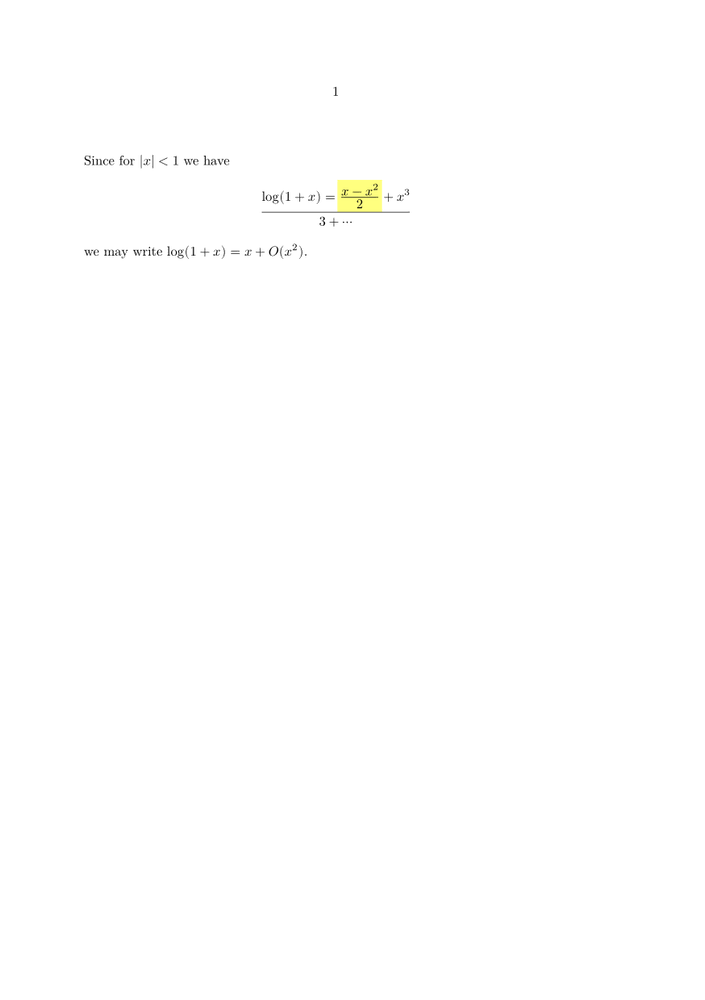

Contents
Summary
The command \definemathframed is used to color the background of a part of a displayed equation.
Settings
| \definemathframed[...][...][...=...,...] | |
| [...] | name |
| [...] | name |
| ...=...,... | inherits from \setupmathframed |
Description
Examples
Example 1
-
\setuppapersize[A5] \definemathframed[graymath] [ frame=off, location=mathematics, background=color, backgroundcolor=lightyellow, backgroundoffset=1pt ] \starttext Since for $|x| < 1$ we have \startformula \log(1+x) = \graymath{x- \displaystyle{x^2\over2}} + {x^3 \over 3} + \cdots \stopformula we may write $\log(1+x) = x + O(x^2)$. \stoptext
- 